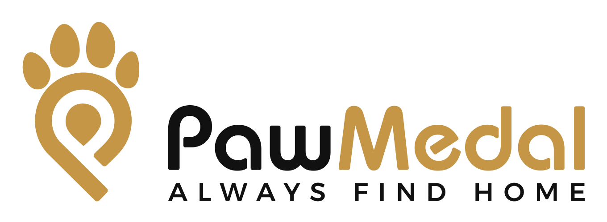
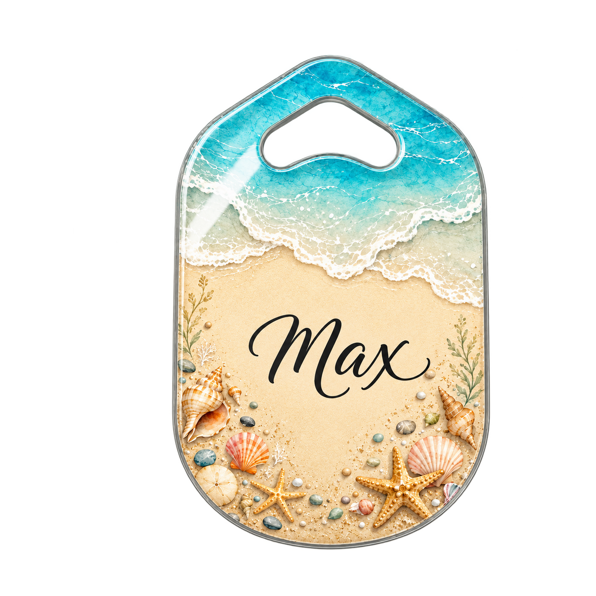
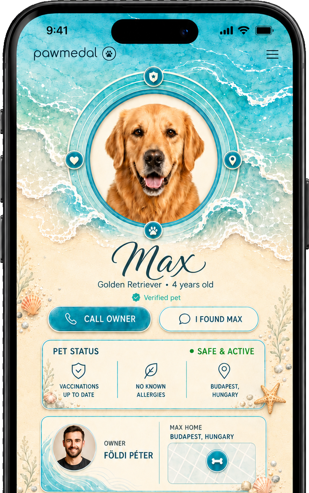
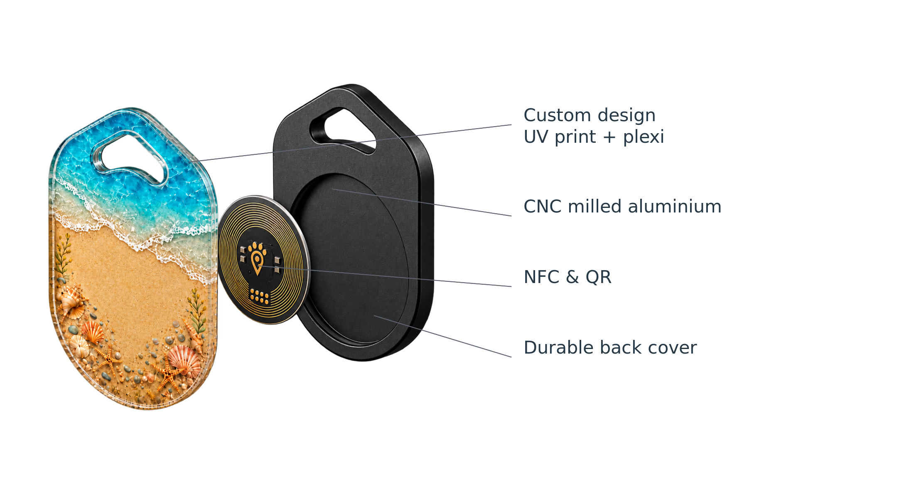

Every year, millions of pets go missing.
A lost pet can happen in seconds. PawMedal gives you a smarter way to increase the chances of a safe return.

LOVE THEM. KEEP THEM CLOSE.
A smarter way to keep your pet safe. With Apple Find My, NFC and a unique pet profile, PawMedal helps you find, protect and care for what matters most.
Apple Find My
For instant access
With health info
And waterproof
A lost pet can happen in seconds. PawMedal gives you a smarter way to increase the chances of a safe return.
pets go missing in Europe every year.
are never reunited with their owners.
PERSONALIZED. STYLISH. SAFE.

TRACK. FIND. REUNITE.

THE COMPLETE PROTECTION.
Give your pet's profile a story, so it's always there when it matters the most. All in one place.

Using Apple’s Find My network, you can locate your pet anywhere in the world. With its compact and durable design, PawMedal Finder is ready for every adventure.
Explore Finder
Real-time location
via Apple Find My
No subscription fees
Replaceable battery
up to 1 year
Waterproof & durable
CNC milled aluminium with a beautiful finish, customized with your pet’s unique design. Lightweight, durable and made for everyday adventures.
Design My Tag
Why choose PawMedal?
|
Traditional Tag

|
PawMedal Tag | PawMedal Finder
|
|---|---|---|---|
| Owner contact details | |||
| NFC for instant access | |||
| Unique pet profile | |||
| Vaccination records | |||
| Medical information | |||
| Live location | |||
| Location history | |||
| Works worldwide | |||
| Subscription fees | |||
| Durable & waterproof |
Pick a style, add your pet’s name and make it truly theirs. From nature and cities to fun and
artistic themes – the choice is yours.
From your idea
to a unique tag
in seconds.
Personalized by real artists
or your own imagination
Choose from 100+ designs
or create your own
Fast and easy customization
in just a few clicks
Preview result
before ordering.
Get answers to the most common questions about PawMedal and how it helps keep your pet safe.
View All QuestionsEverything you need to know about PawMedal.
Still have a question?
We’re here to help.